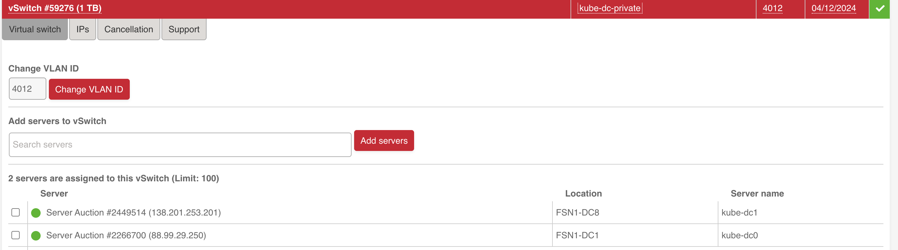
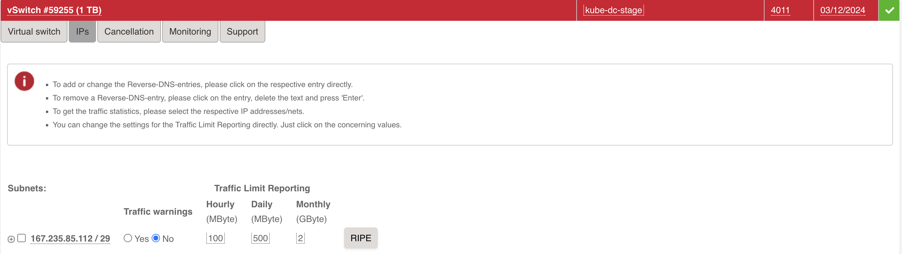

Master-Worker Setup on Hetzner Dedicated Servers ¶
This guide provides step-by-step instructions for deploying a Kube-DC cluster with a master and worker node setup on Hetzner Dedicated Servers. This deployment leverages Hetzner's vSwitch and additional subnets to provide enterprise-grade networking capabilities for floating IPs and load balancers.
Prerequisites ¶
- At least two Hetzner Dedicated Servers
- Access to Hetzner Robot interface
- A Hetzner vSwitch configured for your servers (see Hetzner vSwitch documentation)
- An additional subnet allocated through Hetzner Robot for external IPs and load balancers
- Wildcard domain ex: *.dev.kube-dc.com shoud be set to main public ip of master node.
Server Configuration ¶
1. Prepare Servers ¶
Ensure your Hetzner Dedicated Servers meet these minimum requirements: - Master Node: 4+ CPU cores, 16+ GB RAM - Worker Node: 4+ CPU cores, 16+ GB RAM
Install Ubuntu 24.04 LTS on all servers through the Hetzner Robot interface.
2. Configure vSwitch ¶
In the Hetzner Robot interface:
- Create a vSwitch if you don't have one already
- Add your servers to the vSwitch 
- Request an additional subnet to be used for external IPs (Floating IPs)
- Assign the subnet to your vSwitch: 
You will get two vlan ids, one for the local network(in example 4012) and one for the external subnet with public ips(in example 4011).
Network Configuration ¶
1. Configure Network Interfaces ¶
SSH into each server and configure the networking using Netplan.
Backup default netplan config:
/etc/netplan/60-kube-dc.yaml)Replace values with
example by values from default file(see it in /root/tmp/):
network:
version: 2
renderer: networkd
ethernets:
enp0s31f6_example: # Primary network interface name (get it from default netplan config)
addresses:
- 22.22.22.2_example/24 # Primary IP address and subnet mask (get it from default netplan config)
routes:
- to: 0.0.0.0/0 # Default route for all traffic
via: 22.22.22.1_example # Gateway IP address (get it from default netplan config)
on-link: true # Indicates the gateway is directly reachable
metric: 100 # Route priority (lower = higher priority)
routing-policy:
- from: 22.22.22.2_example # Source-based routing for traffic from gateway (Primary IP)
table: 100 # Custom routing table ID
nameservers:
addresses:
- 8.8.8.8 # Primary DNS server (Google)
- 8.8.4.4 # Secondary DNS server (Google)
vlans:
enp0s31f6.4012_example: # VLAN interface name (format: interface.vlan_id, see your VLAN in https://robot.hetzner.com/vswitch/index)
id: 4012_example # VLAN ID (must match your Hetzner vSwitch ID, same vlan_id)
link: enp0s31f6_example # Parent interface for VLAN (same interface from default netplan config)
mtu: 1460 # Maximum Transmission Unit size
addresses:
- 192.168.100.2/22 # Master node IP on private network (This for master node setup)
#- 192.168.100.3/22 # Worker node IP (This for master node setup)
Apply the configuration:
2. System Optimization ¶
Downgrade kernel (due to a bug in kernel https://github.com/k3s-io/k3s/issues/11175):
sudo apt -y update
sudo apt install linux-image-6.8.0-52-generic linux-headers-6.8.0-52-generic
# Remove previous kernel
sudo apt-get remove --purge linux-image-6.8.0-58-generic linux-headers-6.8.0-58-generic
# Reboot
sudo reboot
On all nodes, update, upgrade, and install required software:
Update to the latest kernel version:
After the server reboots, verify your kernel version:
Optimize system settings by adding to /etc/sysctl.conf:
# Increase inotify limits
fs.inotify.max_user_watches=1524288
fs.inotify.max_user_instances=4024
# Enable packet forwarding
net.ipv4.ip_forward = 1
Ensure the nf_conntrack module is loaded:
# Check if the module is loaded
lsmod | grep nf_conntrack
# If not loaded, load it manually
sudo modprobe nf_conntrack
# To ensure it's loaded on boot, add it to /etc/modules
echo "nf_conntrack" | sudo tee -a /etc/modules
Apply the changes:
Disable systemd-resolved to prevent DNS conflicts:
sudo systemctl stop systemd-resolved
sudo systemctl disable systemd-resolved
sudo rm /etc/resolv.conf
echo "nameserver 8.8.8.8" | sudo tee /etc/resolv.conf
echo "nameserver 8.8.4.4" | sudo tee -a /etc/resolv.conf
Update the hosts file on each server with the private IPs:
# On Master Node
echo "192.168.100.2 kube-dc-master-1" | sudo tee -a /etc/hosts
# On Worker Node
echo "192.168.100.3 kube-dc-worker-1" | sudo tee -a /etc/hosts
Kubernetes Installation ¶
1. Install Cluster.dev ¶
On the master node, install Cluster.dev:
2. Configure and Install RKE2 on Master Node ¶
Install kubectl:
curl -LO "https://dl.k8s.io/release/$(curl -L -s https://dl.k8s.io/release/stable.txt)/bin/linux/amd64/kubectl"
chmod +x kubectl
sudo mv kubectl /usr/local/bin/
Create RKE2 configuration (replace the external IP with your server's public IP):
sudo mkdir -p /etc/rancher/rke2/
cat <<EOF | sudo tee /etc/rancher/rke2/config.yaml
node-name: kube-dc-master-1
disable-cloud-controller: true
disable: rke2-ingress-nginx
cni: none
cluster-cidr: "10.100.0.0/16"
service-cidr: "10.101.0.0/16"
cluster-dns: "10.101.0.11"
node-label:
- kube-dc-manager=true
- kube-ovn/role=master
kube-apiserver-arg:
- authentication-config=/etc/rancher/auth-conf.yaml
debug: true
node-external-ip: 22.22.22.2_example # Primary IP address (get it from default netplan config)
tls-san:
- kube-api.yourdomain.com
- 192.168.100.2 # Master node IP on private network (This for master node setup)
advertise-address: 192.168.100.2 # Master node IP on private network (This for master node setup)
node-ip: 192.168.100.2 # Master node IP on private network (This for master node setup)
EOF
cat <<EOF | sudo tee /etc/rancher/auth-conf.yaml
apiVersion: apiserver.config.k8s.io/v1beta1
kind: AuthenticationConfiguration
jwt: []
EOF
sudo chmod 666 /etc/rancher/auth-conf.yaml
Install RKE2 server:
export INSTALL_RKE2_VERSION="v1.32.1+rke2r1"
export INSTALL_RKE2_TYPE="server"
curl -sfL https://get.rke2.io | sh -
sudo systemctl enable rke2-server.service
sudo systemctl start rke2-server.service
You can check the installation logs here:
Configure kubectl:
mkdir -p ~/.kube
sudo cp /etc/rancher/rke2/rke2.yaml ~/.kube/config
sudo chown $(id -u):$(id -g) ~/.kube/config
chmod 600 ~/.kube/config
Verify the cluster status:
kubectl get nodes
# If you see this output then you can proceed:
NAME STATUS ROLES
kube-dc-master-1 NotReady control-plane,etcd,master
4. Join Worker Node to the Cluster ¶
Get the join token from the master node:
On the worker node, create the RKE2 configuration (replace TOKEN with the token from the master node):
# on worker node
sudo mkdir -p /etc/rancher/rke2/
cat <<EOF | sudo tee /etc/rancher/rke2/config.yaml
token: <TOKEN>
server: https://192.168.100.2:9345 # Master node local IP
node-name: kube-dc-worker-1
node-ip: 192.168.100.3
EOF
Install RKE2 agent:
# on worker node
export INSTALL_RKE2_VERSION="v1.32.1+rke2r1"
export INSTALL_RKE2_TYPE="agent"
curl -sfL https://get.rke2.io | sh -
sudo systemctl enable rke2-agent.service
sudo systemctl start rke2-agent.service
Monitor the agent service:
Verify on the master node that the worker joined successfully:
Install Kube-DC Components on Master Node ¶
1. Create Cluster.dev Project Configuration ¶
On the master node, create a project configuration file:
mkdir -p ~/kube-dc-hetzner
cat <<EOF > ~/kube-dc-hetzner/project.yaml
kind: Project
name: kube-dc-hetzner
backend: "default"
variables:
kubeconfig: ~/.kube/config
debug: true
EOF
2. Create Cluster.dev Stack Configuration ¶
Create the stack configuration file(replace example by appropriate values):
cat <<EOF > ~/kube-dc-hetzner/stack.yaml
name: cluster
template: https://github.com/kube-dc/kube-dc-public//installer/kube-dc/templates/kube-dc?ref=main
kind: Stack
backend: default
variables:
debug: "true"
kubeconfig: /root/.kube/config # Change for your username path to RKE kubeconfig
cluster_config:
pod_cidr: "10.100.0.0/16"
svc_cidr: "10.101.0.0/16"
join_cidr: "100.64.0.0/16"
cluster_dns: "10.101.0.11"
default_external_network:
nodes_list: # list of nodes, where 4011 vlan (external network) is accessible
- kube-dc-master-1
- kube-dc-worker-1
name: external4011_example # VLAN interface for this name you can find here https://robot.hetzner.com/vswitch/index
vlan_id: "4011_example" # VLAN interface id, see your VLAN in https://robot.hetzner.com/vswitch/index
interface: "enp0s31f6_example" # Parent interface for VLAN (same interface from default netplan config)
cidr: "33.33.33.33_example/29" # External subnet provided by Hetzner (should see during VLAN creation here https://robot.hetzner.com/vswitch/index)
gateway: 33.33.33.34_example # Gateway for external subnet (should see during VLAN creation here https://robot.hetzner.com/vswitch/index)
mtu: "1400"
node_external_ip: 22.22.22.2_example # Primary IP address (get it from default netplan config). Wildcard *.dev.kube-dc.com shoud be faced on this ip
email: "noreply@example.com"
domain: "dev.example-kube-dc.com"
install_terraform: true
create_default:
organization:
name: example
description: "My test org my-org 1"
email: "example@example.com"
project:
name: demo
cidr_block: "10.1.0.0/16"
monitoring:
prom_storage: 20Gi
retention_size: 17GiB
retention: 365d
versions:
kube_dc: "v0.1.21" # release version
EOF
3. Deploy Kube-DC ¶
Run Cluster.dev to deploy Kube-DC components:
This process will take 15-20 minutes to complete. You can monitor the deployment progress in the terminal output.
4. Verify Installation ¶
After successful deployment, you will receive console and login credentials for deployment admin user. Also if you have created some default organization youll get organization admin credentials. Example:
keycloak_user = admin
organization_admin_username = admin
organization_name = example
project_name = demo
retrieve_organization_password = kubectl get secret realm-access -n example -o jsonpath='{.data.password}' | base64 -d
retrieve_organization_realm_url = kubectl get secret realm-access -n example -o jsonpath='{.data.url}' | base64 -d
console_url = https://console.dev.kube-dc.com
keycloak_password = XXXXXXXX
keycloak_url = https://login.dev.kube-dc.com
Post-Installation Steps ¶
1. Access Kube-DC UI using default organization credentials ¶
After the installation completes, the Kube-DC UI should be accessible at https://console.yourdomain.com.
In cdev output there are output for default organization, project and admin user for default organization(use retrieve_organization_password to login):
console_url = https://console.dev.kube-dc.com
organization_admin_username = admin
organization_name = example
project_name = demo
retrieve_organization_password = kubectl get secret realm-access -n example -o jsonpath='{.data.password}' | base64 -d
retrieve_organization_realm_url = kubectl get secret realm-access -n example -o jsonpath='{.data.url}' | base64 -d
2. Keep credentials for Keycloak master admin user ¶
You can save global Keycloak credentials if you need to manage Keycloak as super-admin.
Master admin user credentials:
Troubleshooting ¶
If you encounter issues during the installation:
-
Check the RKE2 server/agent logs:
-
Check the Kube-OVN logs:
-
Verify network connectivity between nodes on the private network:
For additional help, consult the Kube-DC community support resources.